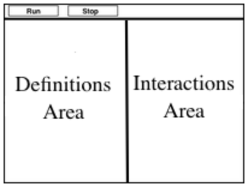

Standards with prefix BS are specific to Bootstrap; others are from the Common Core. Mouse over each standard to see its corresponding evidence statements. Our Standards Document shows which units cover each standard.
6.SP.1-3: The student develops an understanding of statistical variability.
Recognize a statistical question as one that anticipates variability in the data related to the question and accounts for it in the answers
Length: 90 Minutes
Glossary:
arguments: the inputs to a function; expressions for arguments follow the name of a function
categorical data: kind of data with a value that has a fixed number of possible values
contract: a statement of the name, domain, and range of a function
data row: an individual, structured piece of data in a dataset
data science: The study of using data to answer questions about the world
definitions area: the text box in the Editor, where definitions for values and functions are written
domain: the type of data that a function expects
editor: software in which you can write and evaluate code
error message: information from the computer about errors in code
function: a mathematical object that consumes inputs and produces an output
header row
interactions area: the text box in the Editor, where we enter expressions to evaluate
programming language: a set of rules for writing code that a computer can evaluate
quantitative data: data with values that measure some amount or quantity; may not have a fixed number of possible values
range: the type of data that a function produces
table: A data structure that stores data as rows, with entries in particular columns
Materials:
Preparation:
Types
Functions
Values
Introduction
Overview
Learning Objectives
Evidence Statementes
Product Outcomes
Materials
Preparation
Introduction(Time 5 minutes)
IntroductionTake a minute to look at the opening questions we have prepared for you, and choose a topic that interests you.
Once you’ve selected your topic, choose a question you’d like to answer.
Spend one minute discussing your answer, and explaining why you answered the way you did. Do other students agree with you?
WHat could you measure to determine if your answer is right or not?
Have students work in groups (no larger than 4), with each group choosing an Opening Question (or writing their own). After they’ve had time to discuss, have a few students share back what they talked about.
What’s the greatest movie of all time? The best quarterback? Is Stop-and-Frisk racially biased? These questions quickly turn into a discussion about data - how you measure it and how you interpret the results. In this course, you’ll learn how to use data to ask and answer questions like this. The process of learning from data is called Data Science. Data science techniques are used by scientists, business people, politicians, sports analysts, and hundreds of other different fields to ask and answer questions about data.
You can motivate relevance of data science by using additional examples that relate to student interests. Here are a few:
We’ll use a programming language to investigate these questions. Just like any human language, programming languages have their own vocabulary and grammar that you will need to learn. The language you’ll be learning for data science is called Pyret.
Set expectations for the class. This course is an introduction data science, so some questions will be out of reach!
Open up the Image Table starter file. Click "Connect to Google Drive" to sign into your Google account, and then click the "Save as" button. This will save a copy of the file into your own account, so that you can make changes and retrieve them later.
Each student (or pair of students) should have a Google Account.

This screen is called the editor, and it looks something like the diagram you see here. There are a few buttons at the top, but most of the screen is taken up by two large boxes: the Definitions Area on the left and the Interactions Area on the right.
For now, we will only be writing programs in the Interactions area.
The Definitions Area is where programmers define values and functions that they want to keep, while the Interactions Area allows them to experiment with those values and functions. This is like writing function definitions on a blackboard, and having student use those functions to compute answers on scrap paper.
When you click "Run", Pyret reads what’s written in the Definitions Area on the left, and allows us to use those definitions on the right. The first lines of code on in the Definitions Area load our Data Science library, which has some useful code that will help us in the course, as well as some libraries for working with Tables and making Images. The rest of the program defines a Table called shapes.
Now that we’ve clicked "Run", we can play with our shaped Table. Type shapes into the Interactions Area and hit Enter...
Exploring Tables
Overview
Learning Objectives
Evidence Statementes
Product Outcomes
Materials
Preparation
Exploring Tables(Time 10 minutes)
Exploring TablesWhat comes back is called a Table. Pyret allows us to define names for values, and in this case the name shapes has been defined as the table you see here. Every table has as header row, which names each column in the table. The shapes table has two columns: the name of the shape, and the number of corners.
name
corners
triangle
3
square
4
After the header row, tables can have data rows. Each data row has values for every column (nothing can be left empty!). A table can have any number of data rows, including zero:
name
corners
It’s important to remember that tables are only a approximation of the real thing: this table describes some shapes we’ve observed, but it isn’t the shapes themselves!
Add rows to this table for circle, ellipse and rectangle. Pay close attention to how you use commas and colons, since these are part of the program! When you’re done, click "Run" and print out your new-and-improved shapes table.
You may need to walk through these carefully with students, pointing out where the punctuation marks are so that they’re aware of them before they start coding.
Before we dive into all of the cool things you can do with tables, we need to understand the two different kinds of data that come up in Data Science: Categorical and Quantitative. Quantitative Data is used to measure an amount of something, or to compare two pieces of data to see which is less or more. If we want to ask "how much" or "which is most", we’re talking about Quantitative Data.
"Who is the tallest student?" is an example of a question that is answered with Quantitative Data. What are some other questions you can come up with?
Have students come up with columns that are quantitative (height, age, wealth, etc...)
Categorical Data is used to describe different categories. Categories don’t make sense to compare or measure - if we had a column for eye color, for example, we couldn’t ask if "blue" is more than "brown". We use Categorical Data to ask "which one"? When you look at a whether forecast, temperature is quantitative but whether it’s snowing or raining is categorical.
For the two columns in the shapes table, which is categorical? Which is quantitative?
Have students come up with examples of columns that are categorical (gender, race, diet, etc...).
Data can be categorical or quantitative, depending on how it’s used. It doesn’t make sense to ask whether "square is more than triangle", so most of the time we’d use the name column as categorical data. But if we wanted to sort the table in alphabetical order, suddenly we do care whether square comes before triangle.
For each of the following questions, determine whether the data being used is quantitative or categorical.
We’d like to sort a phone book by the "last name" column.
We’d like to find out which car is the most expensive.
We’d like to find out which cars are red.
We’d like to find out which puppy is the youngest.
We’d like to find out which kitten is a Tabby.
We want to know which people have a ZIP code of 02907.
The big idea here is that some data can be both categorical and quantitative – what matters is how we use it!
Values and Operators
Overview
Learning Objectives
Evidence Statementes
Product Outcomes
Materials
Preparation
Values and Operators(Time 25 minutes)
Values and OperatorsPyret lets us use many different kinds of data. In this table, for example, you can see Numbers (the number of corners) and Strings (the name of the shape). Let’s get some practice playing with both Datatypes.
With your partner(s), go through the questions on Page 1. Talk about the answers to each question, and write down your answers when required.
Give students time to experiment, and then debrief as a group.
By now you’ve discovered a number of important things about our programming language:
Numbers and Strings evaluate to themselves.
Anything in quotes is a String value, even something like "42". Data scientists care about the difference between Numbers and Strings. ZIP codes, for example, contain only numbers, but the ZIP code 02125 is definitely not the same as the number 2125!
Strings must have quotation marks on both sides. Having only one is an error.
Operators like +, -, *, and / need spaces around them.
Any time there is more than one operator being used, Pyret requires that you use parentheses.
Types matter! We can add two Numbers or two Strings to one another, but we can’t add the Number 4 to the String "hello".
You’ve also seen a few error messages here. Error messages are a way for Pyret to tell you what went wrong, and are a really helpful way of finding mistakes! You’ve seen errors for missing spaces around operators, missing quotation marks, and mismatched operators without parentheses. What other errors do you think there are?
In 6 / 0 we know that you can’t divide any number by 0! In this case,
Pyret obeys the same rules as humans, and gives an error.
An unclosed quotation mark is a problem, but so is an unmatched paren. (2 + 2, for example, will give you an error too!
As you’ve seen, operators like + and - behave exactly the way in Pyret that they do in math class: they add and subtract Numbers, and produce new Numbers! But what about operators like < and >?
To sort the table by age, we need to know if one person’s age is less than someone else’s.
To filter the table to show only young people, we need to know if one person’s age is less than 25.
Those come in handy when comparing quantitative data, so how do they work in Pyret?
With your partner(s), complete Page 1. Talk about the answers to each question, and write down your answers when required.
Have students share back. Point out that all the same rules about parentheses, spaces, and types still applies!
By using and and or, we can combine tests. For example, we might want to ask if a character in a videogame has run out of health points and if they have any more lives. We might want to know if someone’s ZIP Code puts them in Texas or New Mexico. When you go out to eat at a restaurant, you might ask what items on the menu have meat and cheese. We’ll use these Boolean operators in a lot of our Data Science work later on.
Have students play "true or false", in which they stand if you say something true, and sit if you say something false. Start simple ("I am wearing a hat"), and gradually get complex ("I am wearing a hat, and I am standing on one leg").
You’ve already gotten some practice adding rows to the table. But what if we want to add a column, to track whether or not a shape has any corners or not? Which shapes have corners and which don’t?
Add a new column, is-round to the table, then add a Boolean value to the end of each row indicating whether or not that shape has corners. Is this column made up of qualitative or categorical data?
Applying Functions
Overview
Learning Objectives
Evidence Statementes
Product Outcomes
Materials
Preparation
Applying Functions(Time 25 minutes)
Applying FunctionsSo now you know about Numbers, Strings, Booleans and Operators - all of which behave just like they do in math. But what about functions? Pyret has lots of built in functions, which we can use to write more interesting programs.
Let’s explore a new function, called triangle. Type this line of code into the interactions area and hit Enter.
What does this expression evaluate to? Is it a Number? A String? A Boolean?
You’ve just created an example of a new Datatype, called an Image. And you used something called a function to do it. The values that we give to a function are called its arguments.
How many arguments are we giving to triangle in this example?
What are the types of those arguments?
How does this output relate to the two inputs?
Take a minute to try making different triangles. Change the size and color! Try using "outline" for the second argument.
The triangle function consumes a Number and two Strings as input, and produces an Image. As you can imagine, there are many other functions for making images, each with a different set of arguments. For each of these functions, we need to keep track of three things:
Name - the name of the function, which we type in whenever we want to use it
Domain - the data we give to the function (names and Types!), written between parentheses and separated by commas
Range - the type of data the function produces
Domain and Range are Types, not specific values. As a convention, we capitalize Types and keep names in lowercase when writing contracts. triangle works on many different Numbers, not just the 20 we used in the example above!
Can you see what is wrong with each of these expressions? Try copying them into Pyret, one at a time, and reading the error messages aloud.
triangle(20, "solid", "red"
triangle(20 "solid" "red")
triangle("20", "solid", "red")
triangle(20, "solid", "red", "striped")
Explanations for each error message:
Pyret needs both parentheses around the arguments, so that
it knows exactly where the expression begins and ends.
Arguments must be separated with a comma.
triangle expects the first argument to be a Number.
"20" is a String.
triangle takes exactly three arguments. Functions
must be called with the correct number of arguments.
These three parts make up a contract for each function. What are the Name, Domain, and Range of triangle?
The first part of a contract is the function’s name. In this example, our function is named triangle.
The second part is the Domain, or the types of arguments the function expects. triangle expects a Number and two Strings as arguments, so we write Number, String, String to indicate the Domain, with commas between each one (just like lists!).
Finally, after the arrow goes the type of the Range, or the function’s output, which in this case is Image.
Turn to the back of your workbook. We’ve given you the contracts for many Image-producing functions (as well as quite a few others!). Try using some of these contracts to make shapes.
We can extend our shapes table even further, by adding a column called sample. Then, for each row, add an expression that will create an example of that shape. For example:
Complete the sample column in the shapes table by applying the other relevant functions.
The library included at the top of the file includes some helper functions that are useful for Data Science, which we will use throughout this course. Here’s the contract for one of them:
The get-row function consumes a Table and an Index, and produces that row from the table. Note: indexes start at zero, not one! To get the first row of a table, for example, we would write get-row(shapes, 0).
In the Interactions Area, use get-row to get the 2nd and 3rd row of your table.
Writing Examples
Overview
Learning Objectives
Evidence Statementes
Product Outcomes
Materials
Preparation
Writing Examples(Time 20 minutes)
Writing ExamplesFunctions are powerful tools that let us transform data, and it’s a good idea to jot down a few examples to make sure we understand them. Pyret gives us an easy way to write examples, using something called example: blocks.
Below is an example block:
Add this code to the bottom of the Definitions Area in Pyret. Pay attention to the colon after the plural word examples!
How many examples are in this block?
What is the name of the function being used in these examples?
Based on these examples, what do you think this function does?
Add a third example to this block and click "Run".
Change one of your examples so that it is incorrect, then click "Run". What happens?
Direct students to the test output. Point out that Pyret reports the number of tests that pass!
Example blocks are ways for us to automatically check our work, by writing down how functions should work and having Pyret report back about whether our examples are accurate. Pyret, for example, has a function called num-sqrt. What do you think it does?
Add two examples that use num-sqrt to your examples: block. Make sure they both pass!
Here’s the contract for another new function. Can you figure out how to use it in the Interactions Area? Once you’ve figured it out, add an example to the examples: block.
Here’s an example for another new function. Type it into the Interactions Area to see what it does. Can you figure out the contract? Add an example to the examples: block.
Pyret also has a way for us to get at individual columns of a Row, by using square brackets and the name of the column. Here’s an examples: block that shows how:
Add three examples to your block that use this technique. Challenge: can you write an example for the sample column?
Closing
Overview
Learning Objectives
Evidence Statementes
Product Outcomes
Materials
Preparation
Closing(Time 5 minutes)
ClosingOne of the skills you’ll learn in this class is how to diagnose and fix errors. Some of these errors will be syntax errors: a missing comma, an unclosed string, etc. All the other errors are contract errors. If you see an error and you know the syntax is right, ask yourself these two questions:
What is the function that is generating that error?
What is the contract for that function?
By learning to use values, operations and functions, you are now familiar with the fundamental concepts needed to write simple programs. You will have many opportunities to use these concepts in this course, by writing programs to answer data science questions.
Make sure to save your work, so you can go back to it later!